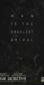

True Detective
Stephen Klancher
...has seen 16
...has seen 0.3 hours
...has not seen 0.1 hours

Timeline
Most Recent:
Omega Station
First Unseen:
The Great War and Modern Memory (# 17)
...has seen 16
...has seen 0.3 hours
...has not seen 0.1 hours
Timeline
Most Recent:
Omega Station
First Unseen:
The Great War and Modern Memory (# 17)
